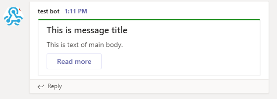

Today I am so pleased to introduce my first CRAN package for sending
formatted messages to Microsoft Teams,
teamr.
Motivation is simple here. For years I have been using Slack and built
many slash commands and apps using incoming webhooks with R, but ever
since I started to use Teams, I found that we will have the same needs
for communicating with R as well. So with some inspiration from the
Python package pymsteams. I
created teamr package with the hope that this package will provide a
simple and clean way to talk to Teams from R.
Installation
You can install the released version of teamr from CRAN with:
install.packages("teamr")
And the development version from GitHub with:
# install.packages("devtools")
devtools::install_github("wwwjk366/teamr")
Example
This is a basic example of send a simple titled message to MS Teams:
library(teamr)
# initiate new connector card object
cc <- connector_card$new(hookurl = "https://outlook.office.com/webhook/...")
# add text
cc$text("This is text of main body.")
# add title
cc$title("This is message title")
# add hyperlink button
cc$add_link_button("Read more", "https://www.google.com")
# change theme color
cc$color("#008000")
We can print out the payload that will be sending to given webhook using
print method
# print out the payload for checking
cc$print()
Card:
hookurl: https://outlook.office.com/webhook/...
payload: {"text":"This is text of main body.","title":"This is message title","potentialAction":[{"@context":"http://schema.org","@type":"ViewAction","name":"Read more","target":["https://www.google.com"]}],"themeColor":"#008000"}
Our JSON payload looks good, time to send it out :)
# send to Teams
cc$send()
[1] TRUE
send menthod will return TRUE if send was successful (status code
200). If it failed, it will return the reponse object for further
investigation. Our message with a link button will looks like this:

You probably noticed now that this package is built using R6
class(very nice tutorial by Hadley
here). I decide to do this way
because by using OOP concept, it will give use a feeling that you are
“building” your message by adding something piece by piece. At the same
time the code will be highly readable and easy to understand. teamr
has 3 main classes as of today — connector_card, card_section and
action_card. For example, let’s add a section to our message:
Message with sections
#initiate new card section object
sec <- card_section$new()
sec$text(sec_text = "2018-19 Finals MVP")
sec$add_fact(fname = "Position", fvalue = "Forward")
sec$title(sec_title = "Player Info")
sec$activity_image(sec_activitiy_image = "https://d2cwpp38twqe55.cloudfront.net/req/201905091/images/players/leonaka01.jpg")
sec$activity_title(sec_activity_title = "Kawhi Leonard")
sec$activity_sub_title(sec_activitiy_subtitle = "LA Clippers")
sec$activity_text(sec_activitiy_text = "Activity text")
cc$add_section(new_section = sec)
cc$send()
[1] TRUE
This is what you will get on your Teams channel:

Message with action cards
Teams also support sending actionable messages. You can add a button to your message which can send HTTP reqeust to a certain URL with different type of inputs.
In the following example, I will add a multilined text input, a date
selector and a multiple choice input to our message. Simply changing
target = "http://..." in add_actions method to the URL you want the
reponse payload to be sent to:
# create new action card
pa <- action_card$new(type = "ActionCard", name = "Add comment")
# add default actions to card
pa$add_actions(type = "HttpPOST", name = "Save", target = "http://...")
# add text inputs
pa$add_text_inputs(id = "comment", title = "Add comment for this task", is_multi_line = TRUE)
# save to the card object
cc$add_potential_action(pa)
pa2 <- action_card$new(type = "ActionCard", name = "Add Date")
pa2$add_actions(type = "HttpPOST", name = "Save", target = "http://...")
pa2$add_date_inputs(id = "date", title = "Add Date for this task")
cc$add_potential_action(pa2)
pa3 <- action_card$new(type = "ActionCard", name = "Add Options")
pa3$add_actions(type = "HttpPOST", name = "Save", target = "http://...")
# add multiple choices. note that choices must be a nested named list
pa3$add_mchoice_inputs(id = "mchoice",
title = "Choice one",
is_multi_select = TRUE,
choices = list(
list(display="In Progress", value=1),
list(display="Active", value=2),
list(display="Close", value=3))
)
cc$add_potential_action(pa3)
cc$send()
[1] TRUE
If you want to learn more regarding Microsoft Connectors, you check out the offical doc here.
Summary
This is my very first package on CRAN so if you found any bugs please report here https://github.com/wwwjk366/teamr/issues. I do have plan to add more functionality to the package so stay tuned!
)